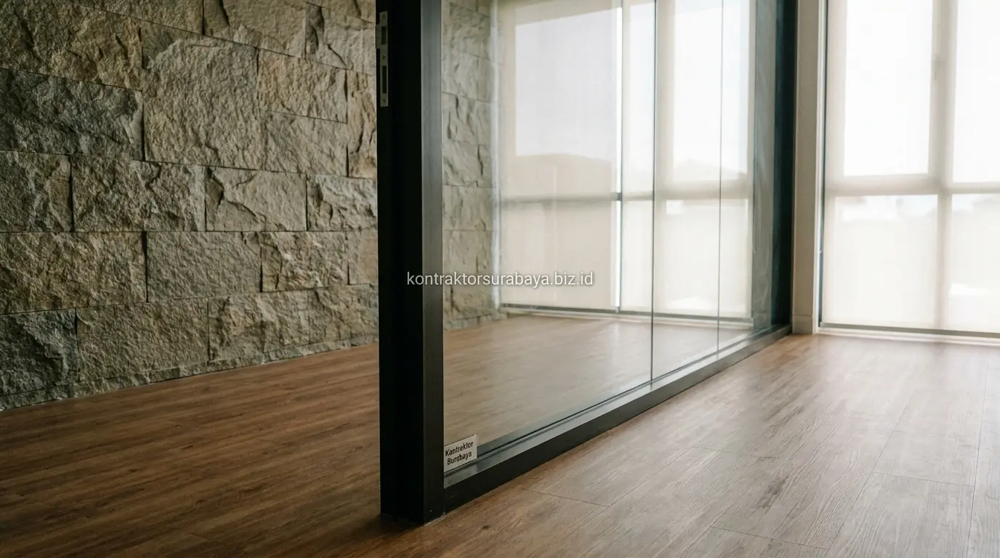
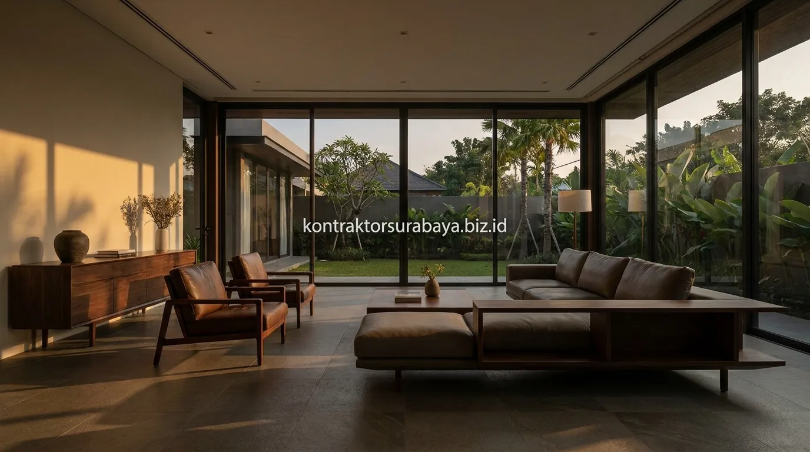

Kamar mandi sering kali menjadi area rumah yang paling cepat kotor, berlumut, dan lembap. Pada rumah-rumah di kawasan perkotaan seperti Surabaya, kebiasaan menggunakan kamar mandi basah konvensional—di mana seluruh lantai basah tersiram air bak atau gayung—kerap menimbulkan masalah jamur di sela keramik, bau apek tak sedap, hingga risiko terpeleset bagi anggota keluarga.
Kini, tren hunian modern beralih ke konsep kamar mandi kering bergaya Japandi (Japanese-Scandinavian). Perpaduan filosofi minimalis Jepang (wabi-sabi) yang mencintai kesederhanaan alami dengan fungsionalitas Skandinavia yang hangat menghadirkan kamar mandi layaknya spa pribadi di rumah. Bersama tim ahli jasa desain interior Surabaya dan tim jasa renovasi bangunan, mari kita kupas tuntas cara mendesain kamar mandi kering Japandi yang cantik sekaligus higienis.
1. Kenapa Kamar Mandi Kering Lebih Sehat Dibanding Kamar Mandi Basah?
Area kamar mandi kering yang tetap kering di luar zona shower mengurangi risiko pertumbuhan lumut dan jamur yang biasa muncul pada kamar mandi basah dengan genangan air yang sulit mengering sepenuhnya.
Kamar mandi basah konvensional, di mana seluruh lantai sering terkena cipratan air, cenderung memiliki tingkat kelembapan udara relatif (RH) di atas 80% sepanjang hari. Lingkungan yang lembap dan hangat tersebut merupakan media ideal bagi koloni bakteri berbahaya seperti E. coli serta spora jamur hitam (black mold) untuk berkembang biak. Sebaliknya, kamar mandi kering membatasi sirkulasi air hanya pada bilik shower tertutup. Area kloset duduk, kabinet cermin, dan wastafel tetap kering 100%, sehingga lantai tidak licin, keset kaki tidak pernah basah kuyup, dan perawatan harian jauh lebih praktis.
2. Elemen Desain Japandi yang Diterapkan pada Kamar Mandi Kering
Material kayu tahan air, warna netral earth tone, partisi kaca untuk area shower, dan elemen batu alam adalah empat elemen desain Japandi yang umum diterapkan pada kamar mandi kering:
- Material Kayu Tahan Air: Penggunaan kisi-kisi kayu, kabinet wastafel gantung (floating vanity), atau bingkai cermin berbahan multiplex anti-rayap lapis HPL serat kayu oak memberi kehangatan visual khas Japandi tanpa takut lapuk.
- Palet Warna Earth Tone: Dominasi warna beige, abu-abu muda pasir (sand grey), putih gading, dan krem menciptakan suasana zen yang menenangkan pikiran setelah seharian beraktivitas di luar.
- Partisi Kaca Minimalis: Dinding kaca transparan tanpa bingkai (frameless) menjaga visual ruangan tetap luas, terang, dan tidak terkotak-kotak sempit.
- Tekstur Batu Alam: Aksen dinding batu alam slate, teraso halus, atau granit unpolished menghadirkan nuansa alam organik yang autentik.

3. Sistem Partisi Shower yang Memisahkan Area Basah dan Kering
Partisi kaca tempered dengan bingkai minimalis atau tanpa bingkai (frameless) menjadi pilihan umum untuk memisahkan area shower dari area kering, memungkinkan air tetap terkonsentrasi di satu zona tanpa menghalangi kesan terbuka pada ruangan.
Kunci keberhasilan zona kering terletak pada rekayasa lantai di area shower. Lantai bilik shower harus dibuat lebih rendah (drop floor) sekitar 3 hingga 5 cm dibanding lantai area kering, atau dipasangi ambang batas marmer/granit (water threshold barrier). Selain itu, kemiringan lantai (slope) menuju floor drain dibuat minimal 1,5%–2% agar air mandi mengalir deras tanpa ada genangan sedikit pun. Pemilihan kaca tempered setebal 8 mm atau 10 mm dengan engsel stainless steel SUS-304 menjamin keamanan jangka panjang anti-karat.
4. Material Lantai dan Dinding yang Tahan Lembap untuk Gaya Japandi
Keramik bermotif kayu dengan permukaan anti-slip, batu alam yang dilapis sealant, dinding dengan waterproofing penuh di area shower, dan grouting anti-jamur adalah empat material yang tahan lembap sekaligus mendukung tampilan Japandi:
| Komponen Ruang | Material Standar Japandi | Spesifikasi & Keunggulan | Rekomendasi Area |
|---|---|---|---|
| Lantai Area Basah | Granite tile matte motif kayu / batu alam | Tekstur berpori halus anti-slip (R-10), tahan gesekan, tidak licin saat tersabun | Zona bilik shower |
| Lantai Area Kering | Homogeneous tile earth tone / teraso cor | Ukuran 60x60 cm atau 60x120 cm, nat semen epoksi anti noda, mudah dipel | Zona kloset & vanity |
| Dinding Dapur Mandi | Waterproofing elastomeric + keramik subway putih/krem | Pelapisan membran 2 lapis hingga ketinggian 2 meter agar dinding belakang tidak rembes | Dinding shower & partisi |
| Kabinet & Meja Wastafel | Multiplex maritim waterproof + HPL motif jati jepang | Tahan percikan air, tepi edging tebal rapat tanpa celah rayap | Zona kering wastafel |
| Nat & Sealant Celah | Grouting epoksi anti jamur & silicone antifungal | Tidak menyerap kotoran, bebas noda hitam kerak lumut sepanjang masa | Sudut kaca & sela ubin |
Rencana pengadaan material keramik motif kayu dan saniter hemat air bergaya Jepang dapat Anda konsultasikan melalui layanan perhitungan RAB & estimasi biaya transparan kami.
5. Sistem Ventilasi yang Mencegah Kelembapan dan Bau pada Kamar Mandi Kering
Exhaust fan yang terhubung ke saluran udara luar, dipadukan jendela kecil atau bovenlicht untuk sirkulasi tambahan, membantu mengeluarkan uap air dan kelembapan dari dalam kamar mandi secara efektif setelah digunakan.
Ventilasi yang baik menjadi faktor krusial meski konsep kamar mandi kering sudah membatasi area basah. Uap air panas dari shower tetap dapat melayang ke plafon dan menempel pada furnitur kayu bila tidak disedot keluar secara cepat. Kami menyarankan pemasangan exhaust fan jenis ceiling mount berkapasitas minimal 100–150 CFM (Cubic Feet per Minute) yang terhubung sakelar ganda dengan lampu shower. Dengan demikian, udara ruangan selalu bersirkulasi segar dan tidak pernah menyisakan bau lembap yang mengganggu.
6. Elemen Dekoratif yang Memperkuat Nuansa Japandi tanpa Mengorbankan Fungsi
Rak kayu solid dengan lapisan pelindung, tanaman yang tahan terhadap kelembapan, lampu dengan suhu warna hangat, dan aksesori anyaman rotan tahan air adalah empat elemen dekoratif yang memperkuat nuansa Japandi tanpa mengorbankan fungsi kamar mandi:
- Niche Dinding Keramik: Pembuatan ceruk tanam di dinding shower (wall niche) untuk tempat sabun dan sampo, menggantikan gantungan kawat yang mudah berkarat.
- Cermin Bulat dengan Backlight LED Warm White: Cermin bundar dengan pencahayaan tersembunyi bersuhu 3000K memberi efek pendar lembut yang menenangkan mata saat membersihkan muka di pagi hari.
- Tanaman Indoor Pembersih Udara: Meletakkan pot kecil tanaman tahan lembap seperti lidah mertua (sansevieria), sirih gading, atau pakis sarang burung di dekat wastafel.
- Wadah Dispenser Keramik Estetis: Botol sabun cair dari keramik tanah liat polos atau kaca amber menggantikan botol plastik kemasan yang berantakan.
7. Kesalahan Umum dalam Mendesain Kamar Mandi Kering Bergaya Japandi
Agar renovasi kamar mandi Anda tidak berujung penyesalan, hindari empat kesalahan umum berikut:
- Partisi Shower Tidak Rapat: Pemasangan lis magnet atau seal karet pintu kaca yang kurang presisi menyebabkan air shower tetap memercik ke area kloset.
- Kemiringan Lantai Shower Kurang Curam: Air mandian tertahan di lantai shower dan lambat surut, meninggalkan bekas kerak sabun putih yang sulit dibersihkan.
- Menggunakan Kayu Tanpa Lapisan Khusus: Memakai kayu mentah tanpa lapisan coating poliuretan atau bahan HPL yang tepat di dekat area wastafel, sehingga kayu cepat menggelembung dan lapuk.
- Ventilasi Pasif Kurang Memadai: Kamar mandi yang tertutup rapat tanpa exhaust fan akan tetap menyimpan uap air dan memicu jamur hitam di plafon gypsum.
"Kamar mandi kering bergaya Japandi bukan sekadar soal estetika kayu dan batu alam, melainkan penciptaan ruang sanitasi yang sehat, higienis, dan menenangkan jiwa. Ketika fungsi dan keindahan menyatu, rutinitas harian di rumah berubah menjadi momen relaksasi yang berharga." — Erlang Sinatrya, Lead Project Engineer Kontraktor Surabaya
Setiap kamar mandi memiliki ukuran, jalur instalasi pipa air kotor, dan posisi bukaan ventilasi yang berbeda. Penerapan konsep kamar mandi kering Japandi yang presisi perlu disesuaikan melalui perencanaan gambar kerja teknis bersama tim profesional. Pelajari cakupan layanan interior kami di halaman jasa desain interior, lihat ragam portofolio kamar mandi modern di halaman galeri proyek, kenali tim kami di tentang kami, atau pelajari katalog lengkap pada halaman layanan konstruksi terpadu.
